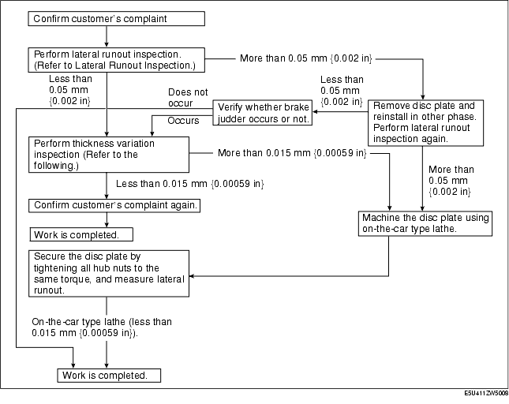
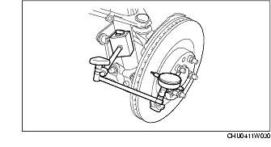
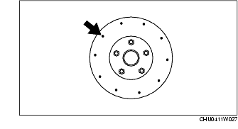
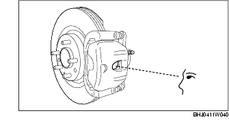

Workshop Manual ➭ BRAKES ➭ CONVENTIONAL BRAKE SYSTEM ➭ FRONT BRAKE (DISC) INSPECTION
FRONT BRAKE (DISC) INSPECTION
id041100800800
{: #wp1059776}
Brake Judder Repair Hints
Description
- Brake judder concern has the following 3 characteristics:
Steering wheel vibration
- Steering wheel vibrates in the rotation direction. This characteristic is most noticeable when applying brakes at a vehicle speed of 100-140 km/h {62.1-86.8 mph}.
Floor vibration
- When applying the brakes, the vehicle body shakes back and forth. The seriousness of the shaking is not influenced by vehicle speed.
Brake pedal vibration
-
When applying brakes, a pulsating force tries to push the brake pad back. The pulsation is transmitted to the brake pedal.
-
The following are the main possible causes of brake judder:
Due to an excessive runout (side-to-side wobble) of the disc plate, the thickness of the disc plate is uneven.
-
If the runout is more than 0.05 mm {0.002 in} at the position 10 mm {0.39 in} from the disc plate edge, uneven wear occurs on the disc plate because the pad contacts the plate unevenly.
-
If the runout is less than 0.05 mm {0.002 in}, uneven wear does not occur.
The disc plate is deformed by heat.
- Repeated panic braking may raise the temperature in some portions of disc plate by approx. 1,000 °C {1,832 °F}. This results in a deformed disc plate.
Due to corrosion, the thickness and friction coefficient of disc plate change.
-
If a vehicle is parked in damp conditions for a long time, corrosion occurs on the friction surface of disc plate.
-
The thickness of corrosion is uneven and sometimes appears like a wave pattern, which changes the friction coefficient and causes a reaction force.
Inspection and repair procedure

Lateral runout inspection
- To secure the disc plate and the hub, insert the washer (thickness 10 mm {0.39 in}, inner diameter more than 12 mm {0.47 in}) between each hub bolt and the hub nut, then tighten all the hub nuts.
*Note*{: #wp1060102}
• The component parts of the SST (49 B017 001 or 49 G019 003) can be used as a suitable washer.
- After tightening all the hub nuts to the same torque, put the dial gauge on the friction surface of disc plate 10 mm {0.12-0.28 in} from the disc plate edge.{: #wp1060129}

- Rotate the disc plate one time and measure the runout.
Front disc plate runout limit0.05 mm {0.002 in}
Thickness variation inspection
-
Clean the disc plate-to-pad friction surface using a brake cleaner.
-
Measure the points indicated in the illustration using a caliper (micrometer).{: #wp1060233}

- Subtract the minimum value from the maximum, and if the result is not within specification, machine the disc plate using a lathe.
Thickness variation limit0.015 mm {0.00059 in}
Warning
• Do not exceed minimum disc plate thickness.
Disc Plate Thickness Inspection
Caution
• Excessive runout may result if the disc plate is removed from the vehicle then machined. Machine the disc plate while installed on the vehicle.
- Measure the thickness of the disc plate.
• If the thickness is not within the specification, replace the disc plate.
Minimum front disc plate thickness20 mm {0.79 in}Minimum front disc plate thickness after machining using a brake lathe on-vehicle20.8 mm {0.82 in}
Disc Pad Thickness Inspection
-
Jack up the front of the vehicle and support it with safety stands.
-
Remove the wheel and tires.
-
Verify the remaining thickness of the pads.
Minimum front disc pad thickness2.0 mm {0.079 in} min.
- Replace the pads as a set (right and left wheels) if either one is at or less than the minimum thickness.{: #wp1060490}
